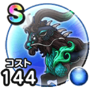

黒竜丸
宝の地図こころ最大コスト+4スキルの斬撃・体技ダメージ+10%デイン属性斬撃・体技ダメージ+10%バギ属性耐性+10%麻痺耐性+10%【ニンジャ】ちから+10【大神官】すばやさ+20 / 8.5点
くわしい特徴
【ランク特殊効果】 こころ最大コスト+4スキルの斬撃・体技ダメージ+10%デイン属性斬撃・体技ダメージ+10%バギ属性耐性+10%麻痺耐性+10%【ニンジャ】ちから+10【大神官】すばやさ+20

宝の地図こころ最大コスト+4スキルの斬撃・体技ダメージ+10%デイン属性斬撃・体技ダメージ+10%バギ属性耐性+10%麻痺耐性+10%【ニンジャ】ちから+10【大神官】すばやさ+20 / 8.5点
【ランク特殊効果】 こころ最大コスト+4スキルの斬撃・体技ダメージ+10%デイン属性斬撃・体技ダメージ+10%バギ属性耐性+10%麻痺耐性+10%【ニンジャ】ちから+10【大神官】すばやさ+20